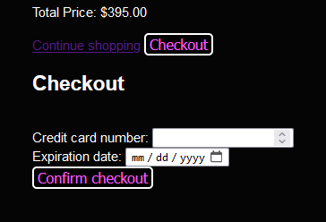
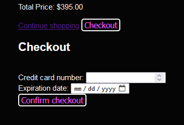
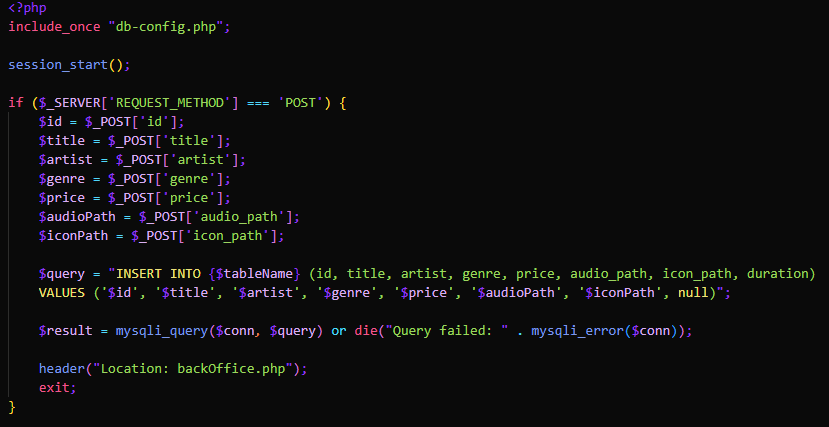
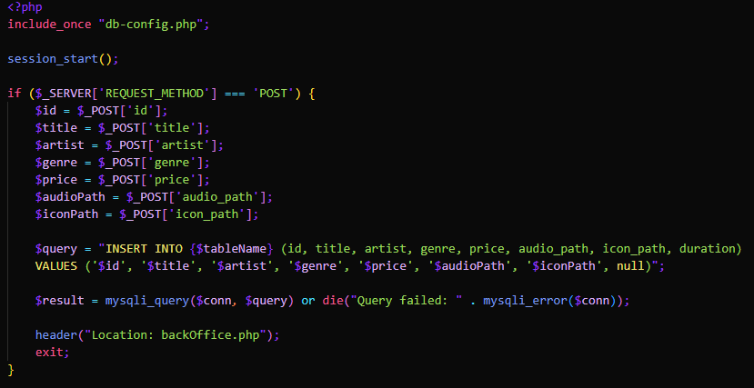

Songs market est une application web vendant des musiques en ligne. Elle n'a pas pour objectif d'être déployée et entièrement fonctionnelle. Des musiques peuvent être ajoutées au panier qui peut être visualisé. Elle contient également une page back-office pour ajouter, supprimer et modifier des musiques.
HTML a été utilisé pour créer le front-end de l'application.
JS m'a permis de créer une fenêtre modale pour ajouter une musique au panier.
J'ai utilisé PHP pour gérer les interactions avec la base de données (back-office), et aussi pour la gestion du panier en session et le processus de paiement fictif.
 

SQL a été utilisé pour interagir avec la base de données (back-office et récupérer les musiques).
 

J'ai utilisé Git et GitHub pour gérer le projet, versionner l'application et partager le projet avec mon enseignant.

Composer m'a permis d'utiliser la dépendance getid3 pour extraire des métadonnées de fichiers audio (leur durée).